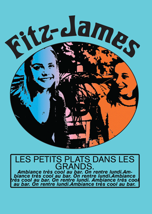
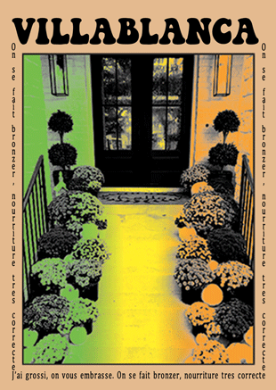
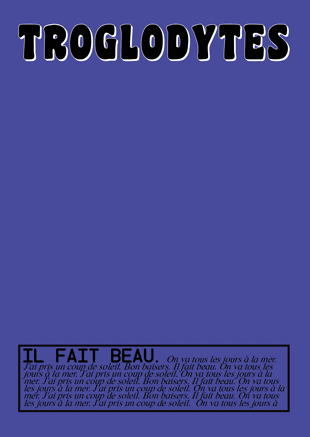
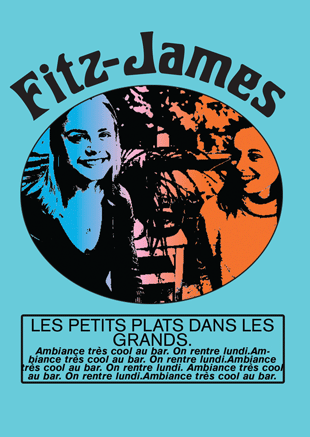
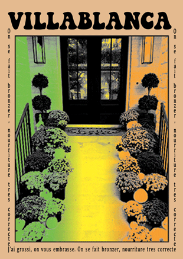
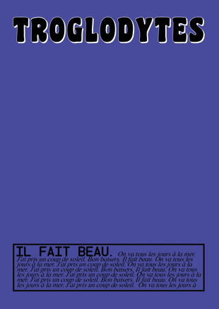

Projet basé sur le Design génératif. Inspirée par le protocole de Georges Perec, j’ai imaginé mes propres modalités protocolaires, pour illustrer ces cartes. Le résultat rappelle un style amateur et vernaculaire. Les visuels proviennent d'Instagram et toutes les modalités sont régies par les chiffres du nombre de like. (Si le premier chiffre est un 2, le fond sera vert, etc)
 




